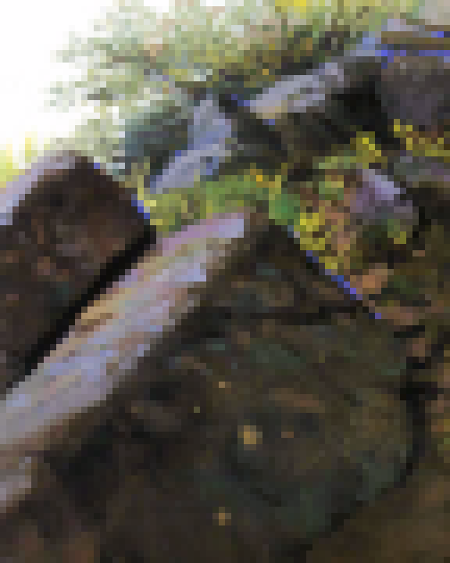
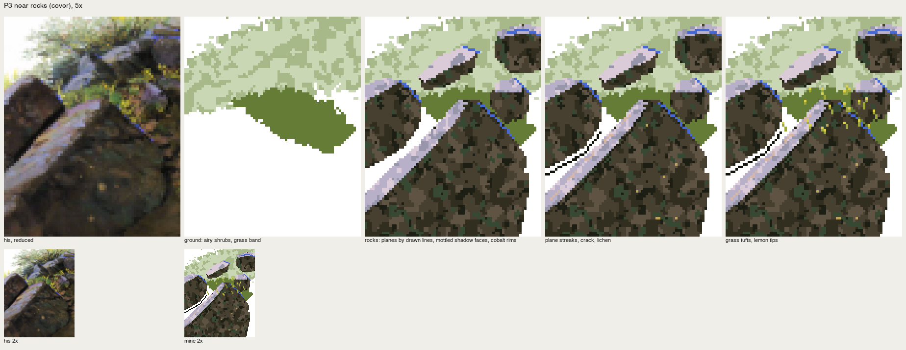
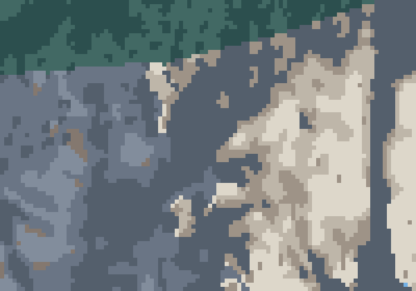

Rock: planes decided by lines
Front page: the tutorial. Code: copies/p3_rocks.py, src/vocab.py facet_rock, fall_strokes.
P3 is the near rocks of the cover (steps 7, 10 and 11), 72×90 px.

nb221. His rocks, reduced, at 7×. A long lit slab running up to the right, pale lavender-pink; the shadow faces warm dark olive-brown; along the far edge of each lit top, a hard line of pure cobalt.
What the cover says about them:
- step 10: "lustrous deep colours in the rock shadows";
- step 11: "raise the rock texture";
- p.56: reflected light takes the sky's colour, loosened by the object's own colour.
v1: planes by drawn lines, mottled faces
Each rock was an outline, a lit top polygon inside it, broad mottled patches on the shadow face, and a cobalt line drawn on the rim:

nb222. v1 by stage. At 2× the slab and the rim carry.
The critic at 5×:
- the slab edge is a jagged staircase;
- the shadow faces are three-brown camouflage;
- the upper boulder floats on the sky;
- the grass is noise.
v2: facets, one step of unevenness, clean edges
Every rock is an outline plus facets drawn as polygons, each facet one flat colour. The slab's edges run on clean 1:1 steps. The facets follow the light:
- the top plane takes the sky light (pink-warm at its upper edge, lavender in the body, darker at its lower end);
- the face turned up to the sky takes a cool green-grey reflected strip;
- the lower faces are darkest.
Pure flat facets looked like vector art (nb229). Oga's uneven paint (塗りムラ) is part of the material. The rule that fixed it: unevenness stays inside the facet and within one step. Each facet gets broad patches of its adjacent step only:
def facets(cv, outline, faces, base='s2', seed=0):
"""a rock: outline filled with the base shadow colour, then facet polygons, each one flat."""
m = cv.mass(outline, I[base], wet=0.0)
NXT = {'s1': 's2', 's2': 's3', 's3': 's4', 's4': 's3', 'refl': 'refl2', 'top1': 'top2', 'top2': 'top1'}
for poly, idx in faces:
f = cv.mass(poly, I[idx], wet=0.0, where=m)
cv.mottle(f, I[NXT.get(idx, idx)], 0.28, 2.6) # broad patches of the adjacent step only
cv.mottle(m & (cv.a == I[base]), I[NXT.get(base, base)], 0.28, 2.6)
return m
# rock B: the long slab, edges on clean 1:1 steps
mB = facets(cv, [(0, 64), (10, 60), (22, 50), (36, 36), (38, 34), (46, 34), (53, 40), (59, 48), (65, 56), (67, 70), (63, 90), (0, 90)],
[([(0, 70), (36, 34), (40, 34), (46, 36), (0, 82)], 'top2'), # the top plane
([(46, 36), (53, 41), (60, 49), (63, 54), (52, 56), (42, 50), (40, 44)], 'refl'), # the strip turned up to the sky
([(42, 50), (52, 56), (63, 54), (66, 66), (46, 70), (30, 62)], 's1'),
([(30, 62), (46, 70), (66, 66), (67, 70), (63, 90), (20, 90), (12, 80)], 's3'), # lower face
([(20, 90), (0, 90), (0, 86), (12, 80)], 's4')])
Then the finishing:
dist_top = (xx + yy - 70) / np.sqrt(2) # distance from the 1:1 top edge
cv.a[slab & (dist_top < 1.6)] = I['top1'] # warm light along the slab's upper edge
cv.a[slab & (xx + yy > 82) & (xx < 16)] = I['top3'] # the lower-left end darkens
for k in range(7): # plane streaks: brush direction follows the plane
x0 = 6 + k * 5
cv.line([(x0, 70 - x0 + 5), (x0 + 3, 70 - x0 + 2)], I['warm'] if k % 2 else I['top1'])
cv.line([(46, 35), (53, 41), (60, 49), (65, 56)], I['rim']) # cobalt: the sky at the edge
cv.line([(0, 83), (12, 71), (24, 59), (34, 49), (40, 43), (46, 37)], I['s4']) # the tuck under the slab
The shrubs behind became olive masses with 2–3 px holes of sky, so the upper rocks sit in something, and the yellow flowers gathered into two clusters.

fig. His | mine, 6×.
The same rule on a wall
On the Skykomish granite the facets are too many to draw by hand, so the planes come from the photo's values, organised (smoothed 1 px, four quantile levels, orphan clean-up). The rules stay:
- lit planes in the lit family, and in shadow one simple cool family;
- one step of warm loosening in the shadow;
- a sky-coloured rim where a sunlit plane turns under into a recess;
- fall-line strokes on the lit planes only.
litm = wall & ~cloud & np.isin(cv.a, [IX['g1'], IX['g2']])
dark_below = np.roll(np.isin(cv.a, [IX['q2'], IX['q3'], IX['q4']]), -1, 0)
cv.a[litm & dark_below & (rr.uniform(size=(H, W)) < 0.6)] = IX['rim']
V.fall_strokes(cv, litm, 'g3', IX, n=45, lens=(2, 7), drift=0.1, seed=seed)

fig. Where the cloud edge crosses the Index wall, 6×: shadowed granite in three cool steps on the left, the sunlit buttress on the right.
A note on the first try at this wall
v1 drew the wall's joints as vertical facets from imagination, and they read as a striped curtain:

nb235. Facets invented rather than observed.
The book's reference page (p.63) says photos are hints, never copied into the space or the composition. Take the forms from observation and make the light your own decision. My failure there was inventing the forms.